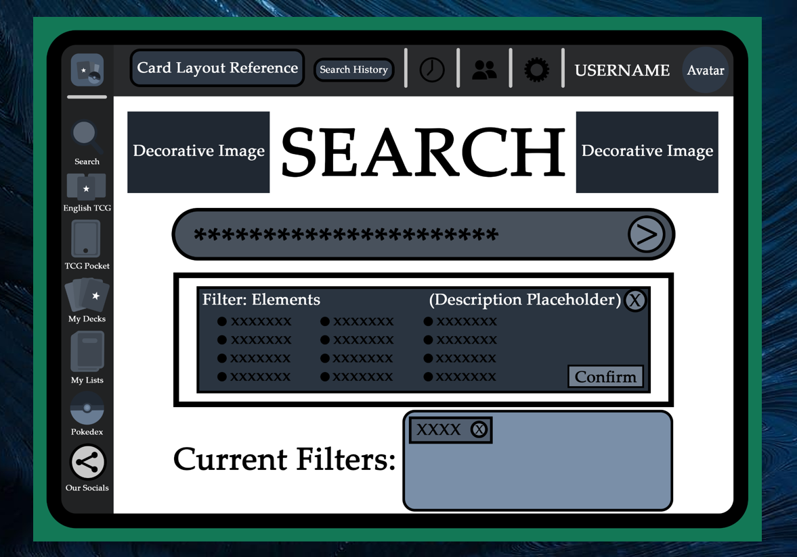

Showcase of my work below!
2025-2024
Pkmn.gg - UI/UX Redesign
Taking a poorly designed website and providing a series of redesigns and improvements to the UX/UI design of the application.

Pkmn.gg - UI/UX Redesign
|

This project consisted of taking a poorly designed website, whether it showcased extremely bad UX/UI design, or only a few aspects of the application were, and providing a series of Low-Fidelity and High-Fidelity screens that we tested to ensure accessibility and ease of use. I learned that it's helpful to create a series of different designs and ideas, then gain feedback and test those ideas to be able to improve upon your work to make it better. I found this project to be extremely interesting, as I never really knew how much work was put into making sure the user could easily understand and use applications in a variety of ways. I enjoyed being able to have creative freedom to create new ideas and then receive feedback to help shape and mold those ideas.